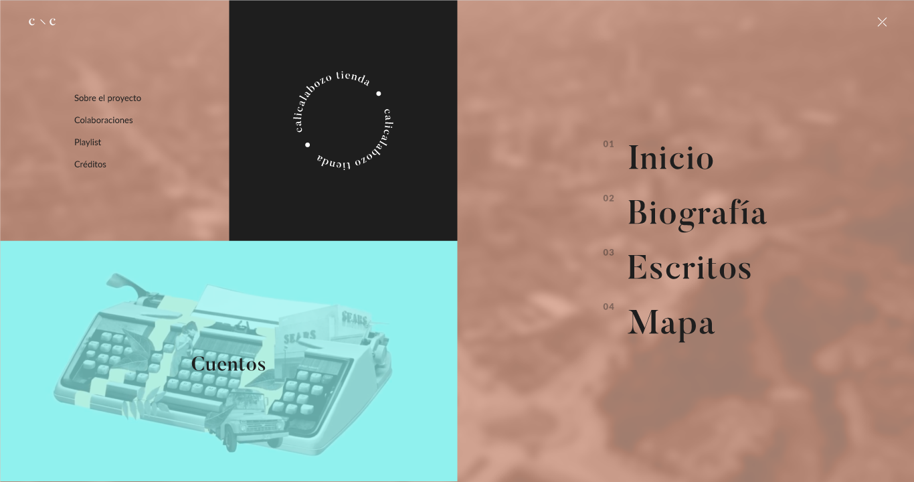
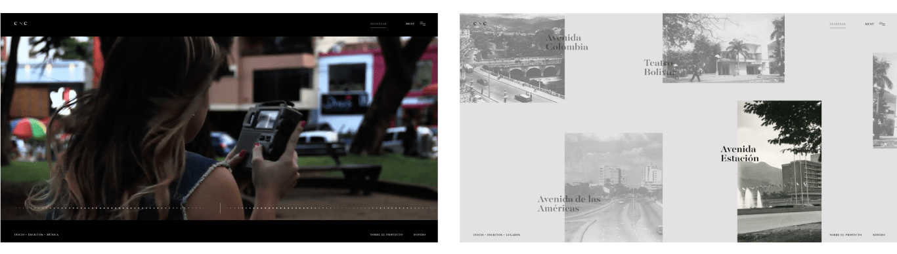
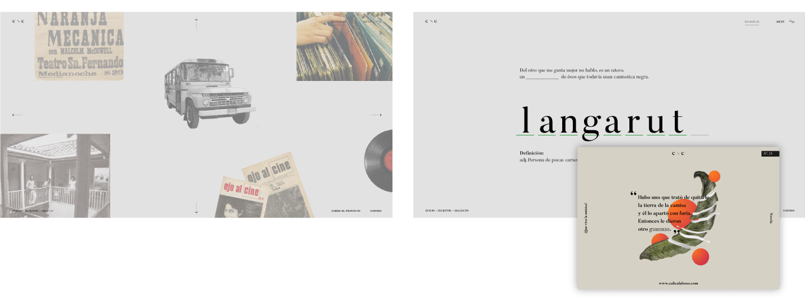

calicalabozo - calicalabozo - calicalabozo
We created an interactive website that promotes and represents the cultural identity/aspects from the city that the writer Andrés Caicedo has inside his books and short stories.
Art Direction, Development, Motion Graphics, Ui, Ux.





